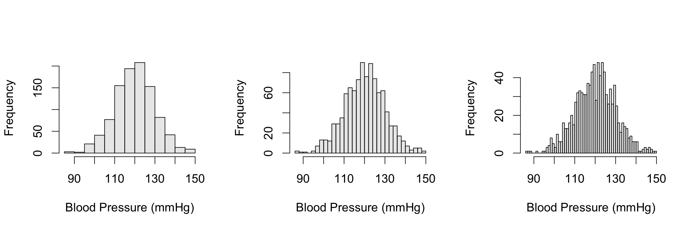

Simple Data Visualization
Data Types
continuous
# blood pressure
set.seed(111)
blood_pressure <- rnorm(1000, mean = 120, sd = 10)
head(blood_pressure)## [1] 122.35221 116.69264 116.88376 96.97654 118.29124 121.40278discrete
# cell counts in a counting chamber
set.seed(222)
cell_counts <- rpois(1000, lambda = 10)
head(cell_counts)## [1] 14 9 14 8 10 9categorical
# blood type of person
set.seed(333)
blood_type <- factor(sample(c("A", "B", "AB", "0"), size = 1000, replace = T))
head(blood_type)## [1] B A 0 AB A AB
## Levels: 0 A AB BStripcharts
par(mfrow=c(1,2))
# overplot
stripchart(blood_pressure, xlab = "Blood Pressure (mmHg)",
pch = 19, col = rgb(0,0,0,0.025), cex=0.75, method = "overplot")
# jitter
stripchart(blood_pressure, xlab = "Blood Pressure (mmHg)",
pch = 19, col = rgb(0,0,0,0.1), cex=0.75, method = "jitter")par(mfrow=c(1,2))
stripchart(cell_counts, xlab = "Cell Counts",
pch = 19, col = rgb(0,0,0,0.025), cex=0.75, method = "overplot")
stripchart(cell_counts, xlab = "Cell Counts",
pch = 19, col = rgb(0,0,0,0.1), cex=0.75, method = "jitter")Beeswarm
library(beeswarm)
par(mfrow=c(1,2))
beeswarm(blood_pressure, xlab = "Blood Pressure (mmHg)",
pch = 19, col = rgb(0,0,0,0.1), cex=0.75, vertical = F)
beeswarm(blood_pressure, xlab = "Blood Pressure (mmHg)",
pch = 19, col = rgb(0,0,0,0.1), cex=0.33, vertical = F)par(mfrow=c(1,2))
beeswarm(cell_counts, xlab = "Cell Counts",
pch = 19, col = rgb(0,0,0,0.1), cex=0.75, vertical = F)
beeswarm(cell_counts, xlab = "Cell Counts",
pch = 19, col = rgb(0,0,0,0.1), cex=0.10, vertical = F)
Histograms
par(mfrow=c(1,3), cex=1.25)
hist(blood_pressure, xlab = "Blood Pressure (mmHg)",
main = "", col = rgb(0,0,0,0.1), breaks = 10)
hist(blood_pressure, xlab = "Blood Pressure (mmHg)",
main = "", col = rgb(0,0,0,0.1), breaks = 30)
hist(blood_pressure, xlab = "Blood Pressure (mmHg)",
main = "", col = rgb(0,0,0,0.1), breaks = 50)
par(mfrow=c(1,3), cex=1.25)
hist(cell_counts, xlab = "Cell Counts",
main = "", col = rgb(0,0,0,0.1), breaks = 10)
hist(cell_counts, xlab = "Cell Counts",
main = "", col = rgb(0,0,0,0.1), breaks = 20)
hist(cell_counts, xlab = "Cell Counts",
main = "", col = rgb(0,0,0,0.1), breaks = 50)Density plots
par(mfrow=c(1,2))
plot(density(blood_pressure), xlab = "Blood Pressure (mmHg)",
main = "", col = rgb(0,0,0,0.8))
plot(density(cell_counts), xlab = "Cell Counts",
main = "", col = rgb(0,0,0,0.8))